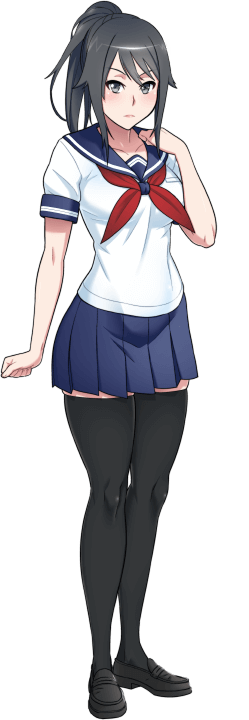

Postacie

Ayano Aishi:
Ayano Aishi jest bohaterką Yandere Simulator. Gracze nazywają ją „Yandere-chan”, a jej koledzy z klasy nadali jej uroczy przydomek „Yan-chan”.
Od wczesnego dzieciństwa Ayano cierpi na niewytłumaczalną i nieuleczalną chorobę. Krótko mówiąc, ten stan pozostawia ją w ciągłym poczuciu pustki, pustej i niekompletnej. W rezultacie nigdy nie była w stanie doświadczyć satysfakcji, spełnienia ani szczęścia i nie była w stanie doświadczać emocji w takim samym stopniu jak inni ludzie. W miarę jak dorastała, nauczyła się udawać normalną osobę, aby uniknąć przyciągania negatywnej uwagi innych, ale nigdy nie była w stanie wykazać się empatią w stosunku do innych ludzi.
Ayano uczęszcza do akademii policealnej o nazwie „Akademi”. Pierwszego dnia drugiego roku na Akademi Ayano nawiązała fizyczny kontakt z młodym mężczyzną o imieniu Taro Yamada. W tym momencie zyskała możliwość doświadczenia wszystkiego, czego brakowało jej w życiu; czuła się spełniona, czuła się spełniona i odczuwała potężne emocje. Spotkanie z Taro było jak zobaczenie kolorów po raz pierwszy, usłyszenie muzyki po raz pierwszy i po raz pierwszy poczucie ciepła. W jego obecności czuła się ogarnięta euforią... ale gdy tylko się rozstali, powróciło uczucie pustki. Już po jednym spotkaniu Ayano beznadziejnie uzależniła się od obecności Taro i zaczęła na nim polegać, aby poczuć, że żyje.
Wtedy Ayano zobaczyła coś okropnego... coś, co ją przeraziło i rozwścieczyło jednocześnie. Była to młoda kobieta, która najwyraźniej żywiła głębokie uczucia do Taro. Jeśli Taro zwiąże się z tą dziewczyną, Ayano może go stracić na zawsze...
Bez chwili wahania Ayano wiedziała dokładnie, co należy zrobić. Tę dziewczynę – jej rywalkę – należało wyeliminować jak najszybciej, wszelkimi niezbędnymi środkami, bez względu na cenę.

Senpai:
Japońskie słowo „senpai” odnosi się do kogoś, kto ma starszeństwo nad kimś innym. Na przykład, jeśli jesteś studentem pierwszego roku, twoimi „senpai” są wszyscy studenci drugiego i trzeciego roku. Jeśli zaczniesz pracować w nowej pracy, każdy współpracownik, który jest zatrudniony w tym miejscu pracy dłużej niż Ty, będzie Twoim „senpai”.
W Yandere Simulator tytuł „Senpai” nadawany jest młodemu mężczyźnie (lub młodej kobiecie), w którym zakochany jest główny bohater. Na początku gry gracz ma możliwość wyboru płci Senpaia; mogą to być „Senpai-kun” lub „Senpai-chan”. Jeśli Senpai jest mężczyzną, nazywa się Taro Yamada, a jeśli jest kobietą, ma na imię Taeko Yamada..
W ciągu roku szkolnego dziesięć różnych dziewcząt zakochuje się w Senpai. W szkole istnieje mit, że jeśli w piątek dziewczyna wyzna miłość chłopcu pod wiśnią za szkołą, to oboje będą się kochać na zawsze. Każda dziewczyna, która zakocha się w Senpai'u planuje spowiedź o 18:00 w piątek. Jeśli jest ktoś, kto chce zatrzymać Senpai tylko dla siebie, ma ona czas do 18:00 w piątek na wyeliminowanie konkurencji.
Ryoba Aishi:
Ryoba urodziła się w 1971 roku. Jej matka — babcia Ayano — była yandere, która porwała i przetrzymywała swojego męża w piwnicy przywiązanego do krzesła, natomiast jej ojciec — dziadek Ayano — został stłamszony psychicznie przez swoją żonę, która zmusiła go do pokochania jej bezgranicznie. Z powodu stanu psychiki jej ojca, Ryoba była w większości wychowywana przez swoją matkę, która prawdopodobnie niegdyś wyznała jej, że była taka sama jak ona kiedy była dzieckiem, lecz pewnego dnia spotkała kogoś, kto ją "dopełnił".
Nigdy również nie ukrywała przed Ryobą tego, co zrobiła jej ojcu. Sama Ryoba była stosunkowo neutralna w stosunku do swojej matki, co jest normalne dla członków rodziny Aishi, zanim poznają swoich wybranków.
Podobnie jak Ayano, już od najmłodszych lat, Ryoba cierpiała na niewytłumaczalną i nieuleczalną przypadłość, która pozostawiała ją z nieustannym poczuciem pustki.
Nie była w stanie odczuwać satysfakcji, spełnienia czy szczęścia, nie potrafiła również odczuwać emocji na tym samym poziomie co inni. Ryoba jedynie udawała bycie normalną osobą w celu uniknięcia nieprzychylnych uwag, lecz nigdy odczuła w żadnym stopniu, choć odrobiny empatii w stosunku do innych osób.
Kocho Shuyona
Kocho Shuyona jest dyrektorką szkoły Yandere-chan. Ma ponad 60 lat i tę samą funkcję piastuje od 1985 roku, kiedy to prestiżowa szkoła otworzyła swoje pierwsze podwoje.
Na początku swojej kariery był wesołym, optymistycznym, energicznym młodym człowiekiem, pełnym nadziei na przyszłość. Jednak w ciągu długiej kadencji jego zachowanie uległo drastycznej zmianie. Stał się cynicznym, pesymistycznym, zmęczonym światem starcem, który zdaje się całkowicie stracił wiarę w świat, zwłaszcza w jego młodość.
What happened over the course of the past few decades to change this man in such drastic ways? What regrets does he live with? What kind of decisions will he make now, at the end of his career, now that he has so little to lose?

Osana Najimi:
Osana i Senpai są bliskimi przyjaciółmi od najmłodszych lat. Zawsze mieszkali obok siebie i zawsze razem chodzili do szkoły.
Pomimo ich bliskości, Osana jest dość niegrzeczna i szorstka w stosunku do Senpai; zawsze łatwo się irytuje i szybko wpada w złość, gdy jest w pobliżu. Powodem takiego zachowania jest to, że Osana rozwinęła romantyczne uczucia do Senpaia, ale boi się wyznać mu, co naprawdę do niego czuje.
Nie chce, żeby wiedział, co naprawdę do niego czuje, więc jest dla niego niemiła niemal przy każdej okazji. Jednak jej prawdziwym pragnieniem jest wyznanie mu swoich uczuć pod wiśniowym drzewem za szkołą... i jeśli nic jej nie powstrzyma, ten dzień nadejdzie bardzo szybko.
Sumire Saitozaki
Sumire Saitozaki była pierwszą dziewczyną, która zakochała się w Jokichi Yudasei, młodym mężczyźnie, który później został ojcem Ayano Aishi.
Sumire była miłą, delikatną dziewczyną o czystym sercu, która nigdy nikomu nie życzyła krzywdy.
Jednak po jej okrutnej śmierci z rąk Ryoby Aishi stała się niespokojnym duchem, który nie był w stanie przejść do zaświatów i na zawsze nawiedzał miejsce, w którym została zabita.
Do dziś pozostaje w toalecie dla dziewcząt na trzecim piętrze, jakby czekała na okazję do zemsty na kobiecie, która odebrała jej życie
Niedawno żarówki w tej łazience przestały działać, jakby jej złośliwość w końcu urosła na tyle, by zacząć wpływać na świat fizyczny…
Gra Yandere Simulator to niezależna gra akcji stworzona przez jedną osobę, znaną w sieci jako YandereDev. Jest to gra typu symulator, w której gracz wciela się w postać Ayano Aishi, dziewczyny zakochanej w chłopaku o imieniu Taro Yamada (znanym również jako Senpai). Gra ma charakter sandboxowy, gdzie gracz ma dużą swobodę w wyborze działań, które mogą prowadzić do różnych zakończeń w grze. Oto szczegółowy opis gry, jej fabuły i mechaniki.
Główna bohaterka – Ayano Aishi (Yandere-chan)
Ayano Aishi to główna bohaterka gry, która cierpi na niewytłumaczoną chorobę psychiczną, która sprawia, że nie potrafi odczuwać empatii ani miłości w tradycyjny sposób. Zamiast tego jest obsesyjnie zakochana w Taro Yamadzie, chłopaku, którego nazywa „Senpai”. Od momentu, gdy Ayano po raz pierwszy spotyka Taro, staje się on całym jej światem, a jej obsesja prowadzi ją do niezdrowych i niebezpiecznych działań.
Taro Yamada (Senpai)
Taro Yamada to chłopak, w którym zakochuje się Ayano. Na początku gry gracz może wybrać płeć Senpaia, co zmienia nieco dynamikę fabuły, ponieważ gracz może wybierać, czy Senpai będzie mężczyzną czy kobietą (w wersji męskiej to Taro, w wersji żeńskiej to Taeko).
Senpai jest zwykłym uczniem szkoły, który nie jest świadomy obsesji Ayano. W grze jego rolą jest być obiektem miłości, a także celem, którego Ayano pragnie zdobyć na własność.
Rywalka
Główna rywalka Ayano to inne dziewczyny w szkole, które zakochują się w Senpaiu. Ayano widzi każdą z nich jako zagrożenie dla swojej miłości i w grze ma do wyboru różne metody eliminowania rywalek
Gracz może wybrać, czy pozbędzie się rywalek w sposób cichy i dyskretny, czy też wprowadzi bardziej brutalne metody.
Wydarzenia w szkole
Gra toczy się głównie w szkole, w której Ayano musi dbać o swoją reputację, jednocześnie wykonując różne działania mające na celu wyeliminowanie rywalek i zdobycie serca Senpaia.
W szkole znajdują się różne kluby, nauczyciele, uczniowie, a także możliwość interakcji z innymi postaciami..
jeśli chcesz pobrac ta gre nasićni
Postacie
Science Club
Akademia jest finansowana przez korporację Saikou, najbogatszy konglomerat na świecie. Dzięki temu Akademia jest jedną z najlepiej finansowanych szkół na Ziemi, która od zawsze przyciąga uwagę młodych przedsiębiorców i wynalazców poszukujących środków niezbędnych do opracowania nowych technologii. Koło Naukowe co roku przyciąga najmądrzejsze i najbardziej ambitne umysły Akademi.
W tym roku Kołem Naukowym kieruje Kaga Kusha, genialny młody wynalazca, który wniósł już znaczący wkład w kilka dziedzin nauki, zwłaszcza w dziedzinie „inteligentnych okularów” i innych optycznych wyświetlaczy montowanych na głowie. Każdy członek Koła Naukowego nosi montowany na głowie wyświetlacz zbudowany przez Kagę i dostosowany do jego potrzeb.
Horo Guramu to genialny młody człowiek, który zyskał międzynarodowe wiadomości po tym, jak wniósł niesamowity wkład w dziedzinę technologii holograficznej. Obecnie próbuje znaleźć sposób na obniżenie kosztów produkcji swoich wynalazków, tak aby urządzenia wyświetlające holograficzne stały się dostępne dla każdego gospodarstwa domowego. To poważny i poważny młody człowiek, który rzadko okazuje emocje.
Dołączyłeś do klubu!
Bullies
„The Bullies”, znane również jako „The Popular Girls” i „The Gyarus”, to grupa pięciu dziewcząt, które mają duży wpływ na pozycję społeczną innych studentek Akademi. Wszystkie łączy podobny styl mody, który został wymyślony przez ich lidera, Musume, który połączył elementy trendów w modzie „gal”, „gyaru” i „ganguro”. Wiadomo, że bezlitośnie znęcają się nad każdym, kogo uważają za „pod spodem”. To znęcanie się często nie jest zgłaszane, ponieważ nikt nie chciałby stanąć po złej stronie Prześladowców i stać się ich nowym celem..
Przywódca Bullies nazywa się Mutsumi Rokuda. Jest córką znanego lichwiarza, dzięki któremu zyskała przydomek „Musume Ronshaku”, co oznacza „Córka Loanshark”. Bogaty ojciec rozpieszczał ją doszczętnie, w wyniku czego Musume dorastała bez powodu, by traktować innych z życzliwością i szacunkiem. Stopniowo nabrała przekonania, że większość ludzi jest „niższa” od niej, a „najniżsi” to dla niej zwykłe zabawki, którymi może dręczyć. Jak dziecku, które nigdy nie nauczyło się odróżniać dobra od zła, po prostu brakuje jej umiejętności postrzegania swoich ofiar jako osób zasługujących na empatię i współczucie. Nie szuka celowo ofiar, ale gdy jakąś zauważy, chętnie skorzysta z okazji, aby potraktować drugą osobę jak śmiecia.
Przez całe życie Musume rzadko musiała ponosić jakiekolwiek konsekwencje swojego złego zachowania. Reputacja jej ojca onieśmielała większość jej nauczycieli i kolegów z klasy, więc większość osobistości nie chciała jej dyscyplinować, a większość dzieci nie chciała się jej przeciwstawić. Gdyby kiedykolwiek zrobiła coś naprawdę złego, jej ojciec rozwiązałby problem za pomocą pieniędzy… lub specjalnego sposobu zastraszania.
Dołączyłeś do klubu!
Delinquents
Akcja Yandere Simulator rozgrywa się podczas drugiego roku studiów Ayano na Akademi. W zeszłym roku pięciu uczniów w Akademii padło ofiarą poważnego zastraszania. Dyrekcja szkoły została poinformowana o znęcaniu się, ale żadna z ofiar nie była w stanie przedstawić konkretnych dowodów na to, że znęcanie się miało miejsce, dlatego też dyrekcja odmówiła podjęcia działań. W końcu znęcanie się stało się tak poważne, że ofiary rozważały pakt samobójczy. Jednak zanim to mogło nastąpić, ofiary były świadkami czegoś niezwykłego, co uratowało je przed autodestrukcyjną ścieżką.
Pewnego dnia przed wejściem do szkoły ofiary zastraszania były świadkami, jak jeden z ich kolegów – Osoro Shidesu – w pojedynkę odpierał grupę brutalnych agresorów z innej szkoły. Wbrew wszystkiemu Osoro udało się pokonać wszystkich swoich przeciwników, pomimo ich przewagi liczebnej. Natychmiast Osoro stał się dla nich ikoną – fizycznym ucieleśnieniem idei, że jedna osoba może przeciwstawić się grupie dręczycieli i zwyciężyć. Od tego dnia prześladowane ofiary były idolem Osoro.
Osoro pokazał, że przemoc jest realnym rozwiązaniem ich problemów i że przerażająca reputacja będzie trzymać ich wrogów z daleka. Pięciu prześladowanych uczniów zaczęło naśladować Osoro; zaczęły zachowywać się szorstko, nieprzyjaznie i bezczelnie, dokładnie tak jak ona. Przefarbowali włosy na blond, tak jak ona. Stylizowali włosy, by nadać sobie wygląd zbuntowanych punków, i zaczęli nosić przez cały czas długie, tępe przedmioty. Zaczęli spóźniać się na zajęcia, okazywać brak szacunku nauczycielom i tak dalej.
Dołączyłeś do klubu!
Student Council
Megami Saikou, przewodnicząca samorządu studenckiego, dąży do doskonałości we wszystkim. Zależy jej tylko na tym, co najlepsze, dlatego utworzyła radę uczniowską składającą się z najbardziej elitarnych uczniów w szkole.
Kuroko Kamenaga była poprzednią przewodniczącą samorządu uczniowskiego szkoły. W ostatnich wyborach do samorządu uczniowskiego została pokonana przez Megami. Jednakże Megami przyznała, że Kuroko był drugą najlepszą osobą na to stanowisko i zaproponowała jej rolę wiceprezydenta. Kuroko przyjął ofertę.
Podczas gdy Megami jest nieobecna w szkole, Kuroko pełni obowiązki prezydenckie Megami. Krótko mówiąc, Kuroko pełni rolę przewodniczącego samorządu studenckiego, podczas gdy Megami nie ma. Kuroko jest znana z tego, że zawsze zachowuje się formalnie, co znajduje odzwierciedlenie w sposobie, w jaki stoi, chodzi i mówi.
Akane Toriyasu jest sekretarzem samorządu uczniowskiego. Jest znana ze swojej delikatnej i przyjaznej osobowości, ale jest też znana z tego, że jest trochę tępa, co sprawia, że tajemnicą jest, dlaczego Megami zdecydowała się powołać ją do Samorządu Uczniowskiego.
Jako jedna z najpiękniejszych dziewcząt w szkole, Akane ma bardzo dużą liczbę męskich wielbicieli. często sama jej obecność wystarczy, aby załagodzić kłopotliwą sytuację. Być może jest to jeden z powodów, dla których Megami zdecydowała się włączyć ją do Samorządu Studenckiego.
Aoi Ryugoku jest egzekutorem Samorządu Uczniowskiego. Oznacza to, że jej zadaniem jest utrzymanie spokoju w całej szkole. Jest osobą imponującą fizycznie, więc nie jest tajemnicą, dlaczego Megami wybrała ją na to stanowisko. Jednak znana jest z tego, że traktuje swoją pracę trochę zbyt poważnie.
Dołączyłeś do klubu!